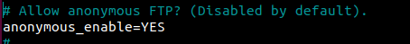
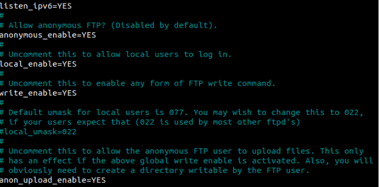
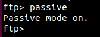
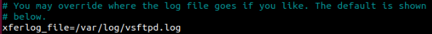
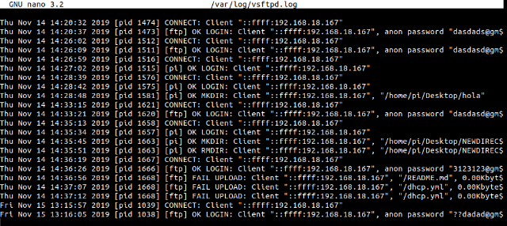
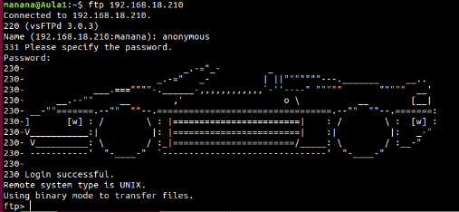
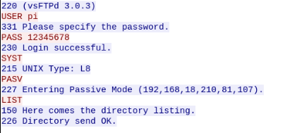
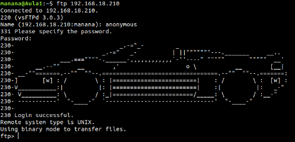
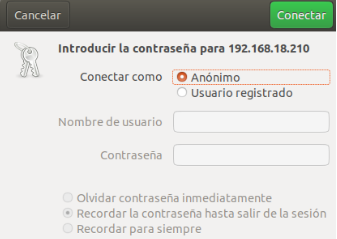

INSTALA EL SERVIDOR VSFTPD EN LA RASPBERRY PI CON LAS SIGUIENTES CARACTERISTICAS:
Que sea un servidor anónimo para descargas

Que sea un servidor para usuarios del sistemay que puedan tanto descargar como subir archivos

Que funcione en modo pasivo

Habilitar los logs


Cambiamos el mensaje de bienvenida

Captura de WireShark que muestre que está funcionando en modo pasivo

Captura de acceso en modo consola

Captura de acceso en modo Gráfico
